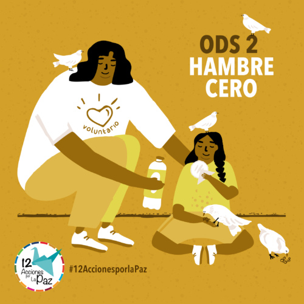

OBJETIVOS DE DESARROLLO SOSTENIBLE
Los Objetivos de Desarrollo Sostenible (ODS) constituyen un llamamiento universal a la acción para poner fin a la pobreza, proteger el planeta y mejorar las vidas y las perspectivas de las personas en todo el mundo. En la década del 2020 al 2030 es fundamental la necesidad de actuar para hacer frente a la creciente pobreza, empoderar a las mujeres y las niñas y afrontar la emergencia climática.

HAMBRE CERO
El Objetivo de Desarrollo Sostenible 2 busca ponerle fin al hambre, lograr la seguridad alimentaria, la mejora de la nutrición y promover la agricultura sostenible. El hambre y la desnutrición hacen que las personas sean menos productivas y más propensas a sufrir enfermedades, por lo que no suelen ser capaces de aumentar sus ingresos y mejorar sus medios de vida. Por esta razón y muchas otras es necesario ponerle fin al hambre y a la desnutrición.
ACCIONES
Actualmente el "Programa de Nutrición" de la "Fundación Juan Bautista Gutiérrez" tiene el objetivo de desarrollar un impacto generacional al incidir en la disminución de los índices actuales de desnutrición crónica, siguiendo los principios de la Seguridad Alimentaria y Nutricional, a través de la transformación y desarrollo de competencias, promoviendo la autosostenibilidad en el cambio de comportamiento de las mujeres y sus familias; acercando alimento nutritivo a las comunidades e impulsando la generación de ingreso a través del emprendimiento.

Desarrolladores
Aquí puedes conocer más a fondo a los desarrolladores de la presente página. (Espacio para insertar la imagen del logo abajo)